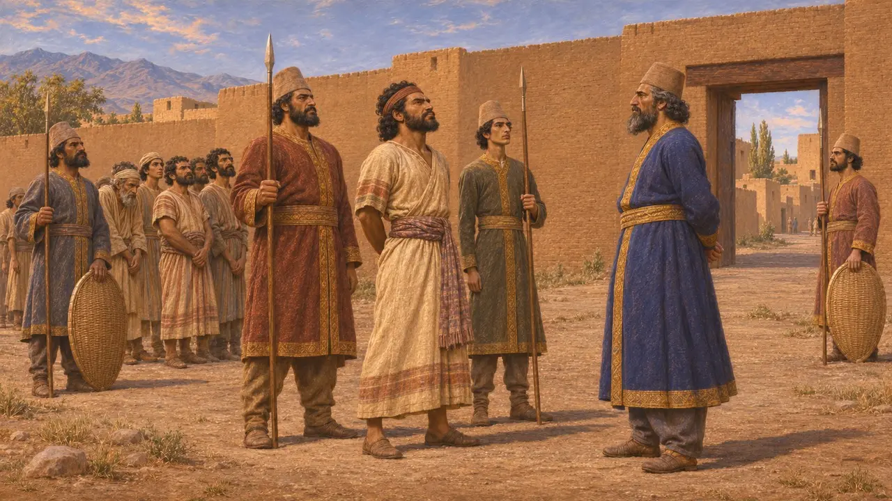
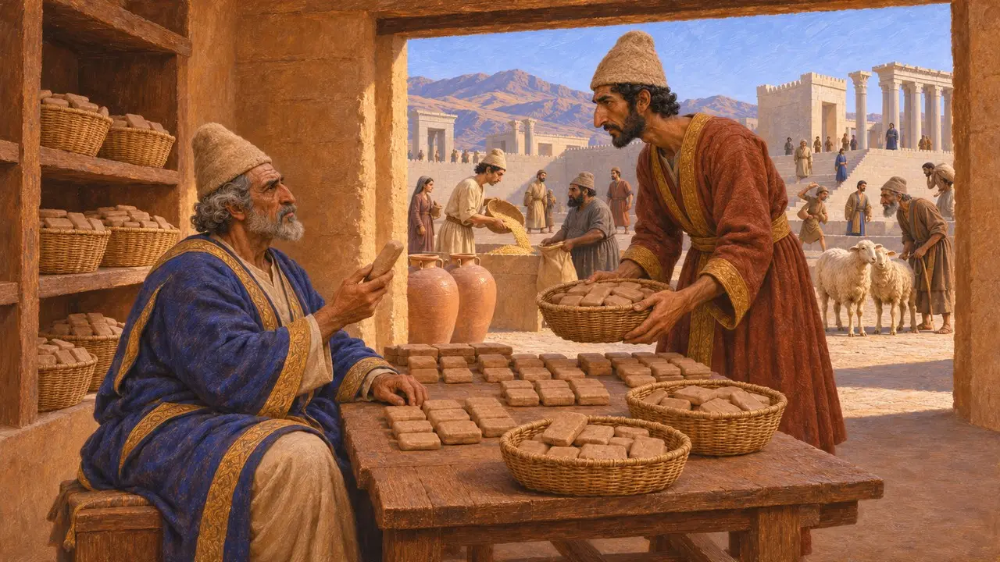
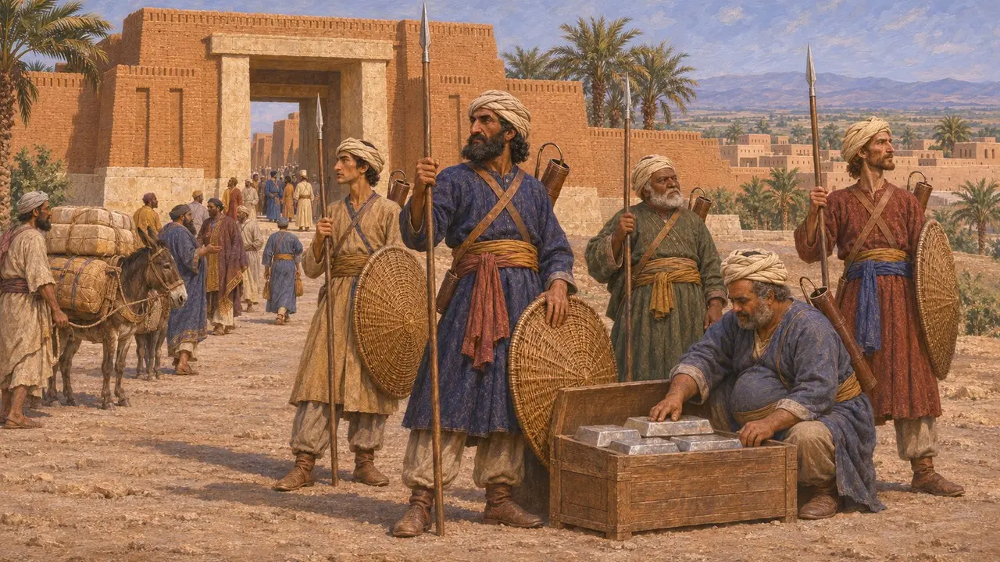
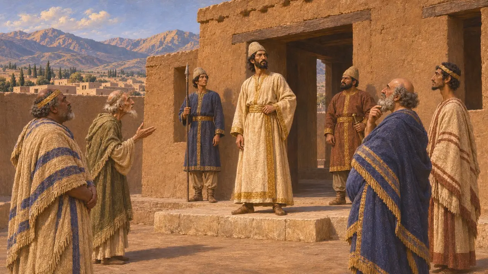

Elam
The old kingdom of south-west Iran around Susa, which rose three times against Darius
In the game: Level 3: The Lie, Level 5: The Charter
Elam was the old kingdom of south-west Iran, the lowland around Susa and the highlands of Anshan to the east. Its language was the main working language of the Persian court's records at Persepolis. Susa became one of Darius's capitals, yet Elam rose against him three times in his first years.
In the game: The Lie level fights Elam's rebels, and the Charter level is set at Susa in Elam. Elamite rebels have their own soldiers and flag, and the Chronicle tells of Elam's revolts.

Three revolts
In the recordDarius says Elam rose first under Assina, who was taken and put to death, then under Martiya, whom the Elamites seized and killed themselves when Darius came near. A third revolt, under Athamaita, was put down by Gobryas in Darius's second or third year.
DB §16-17, §22-23, §71

The language of the records
In the recordThousands of clay tablets from Persepolis, in the Fortification and Treasury archives of about 509-458 BCE, are written in Elamite. They record rations of grain, wine and sheep for workers, travellers and officials. The Behistun inscription was also carved in an Elamite version.
R. T. Hallock, Persepolis Fortification Tablets, 1969

Susa and the Cissians
Ancient accountHerodotus calls the land around Susa Cissia and its people Cissians. He says they paid 300 talents of silver a year, and that in Xerxes' army they were armed like the Persians but wore turbans. The Royal Road from Sardis ended at Susa.
Herodotus 3.91, 5.52-54, 7.62

Anshan and the kings of Persia
DisputedThe Cyrus Cylinder calls Cyrus and his forebears kings of Anshan, an old Elamite title and city. Some historians read this as a sign that the early Persian kings ruled a land once part of Elam and took over its traditions; others see a deliberate claim to an ancient crown.
Cyrus Cylinder (Rogers 1912)
Sources
- DB §16-17, §22-23, §71
- R. T. Hallock, Persepolis Fortification Tablets, 1969
- Herodotus 3.91
- Herodotus 5.52-54
- Herodotus 7.62
- Cyrus Cylinder (Rogers 1912)
- P. Briant, From Cyrus to Alexander, 2002